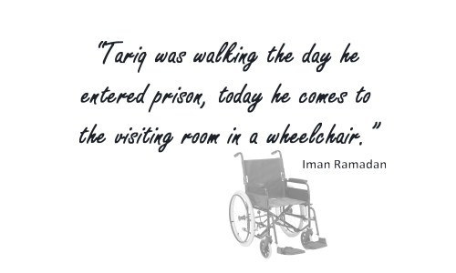
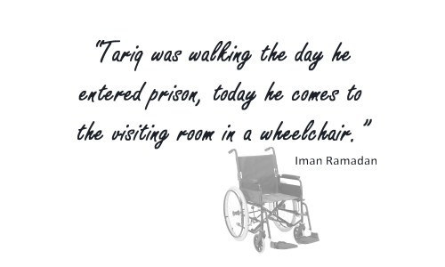
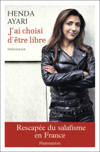
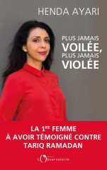

The Time
"Within the past half-decade, Ramadan has become enormously influential among Muslims throughout Europe. He calls for believers to embrace and practice Islam in a thoroughly modern manner. And he advises Muslims on how they can fully integrate into European societies".
link
US-ban
In 2004, Tariq Ramadan is denied entry to the USA base on allegations of financially supporting terrorist groups. The interdiction will last until 2010 when Hillary Clinton revoke the decision, specifying that the ban reflected the stigmatizing and silencing effort of the Bush administration.
Oxford
Dr. Tariq Ramadan, Research Fellow (General) at St Antony’s College, has been appointed the His Highness Hamad Bin Khalifa Al-Thani Chair in Contemporary Islamic Studies beginning on 1 September 2009.
The Chair of the Faculty of Oriental Studies, Jeremy Johns, said: "The Faculty is delighted that the new Chair in Contemporary Islamic Studies is not only a distinguished scholar but also a leading Muslim thinker, who is actively engaged in current debates about the role of Islam in contemporary Europe."
link
Oxford
Tariq Ramadan is influential and openly denounces injustices around the world. In response to the normalisation of far-right rhetoric within the French politics, the Muslim spokesperson defies the system when he announces his aspiration for French citizenship.
Manuel Valls, prime minister at that time, virulently opposes Tariq Ramadan’s request.
Censored
In 2016, not only the professor is banned from Mauritania (the 8th so-called Muslim country to refuse him entry), but also faces censure in France: the events at which he is invited to speak are boycotted and he suffers direct pressure from politicians and political parties.
The fact that the intellectual upsets the French political scene is not a new phenomenon. He is regularly used as a fold by French politicians, especially during presidential campaigns. Thus, nothing new, but the pressure slowly grows, and the reactions are more virulent.
Tariq Ramadan influences, denounces and upsets.
First accusation Henda Ayari claims that the rape she described in her 2016 book was in fact committed by Prof. Tariq Ramadan.
First accusation: Henda Ayari
The 20th of Octobre 2017, Henda Ayari, a feminist activist, claims that the rape she described in her book “I Chose to Be Free,” published in 2016, was in fact committed by Prof. Tariq Ramadan.
She filed a complaint about the assault with the police in her hometown, Rouen, France. She has accused Mr. Ramadan of rape, sexual assault, willful violence, harassment and intimidation. The description is detailed: date, time, place, weather... all of which will later be contradicted by the investigation.

{kind=link}
Second accusation Paule Emma Aline (Chistelle) accuses Tariq Ramadan of rape.
Second accusation: Paule Emma Aline
The 27th of Octobre 2017, Paule Emma Aline (Chistelle), a right-wing political activist, files an complaint for rape. She specifies that she was disabled at the time of the alleged events, walking with crutches; an important fact since it can add an extra 10 years to Ramadan's condemnation. This Fact will however not be substantiated by the medical record her doctor later provides.
In her testimonial, she gives details about the date, the place, and even a dispute that she hears coming from the neighbouring room. Here as well, all these details will later be contradicted by the investigation. She will justify her inconsistancies by alcohol she used to drink at that time.
Leave of Absence “By mutual agreement, and with immediate effect, Tariq Ramadan, Professor of Contemporary Islamic Studies, has taken a leave of absence from the University of Oxford.”
Leave of Absence
The 7th of Novembre 2017, Tariq Ramadan asks for a leave of absence from his Oxford's chair position. The goal is for him to focus on the a court case that becomes increasingly mediatized due to the social media activities of the presumed victims.
48h of Detention Tariq Ramadan voluntarily travels from Qatar to Paris after been called by the judicial police for questioning.
Following the request by the prosecutor F. Molins, Tariq is immediately detained.
Initial detention period
The 31st of January 2018, Tariq Ramadan voluntarily travels from Qatar to Paris after been called by the judicial police for questioning.
The public prosecutor Francois Molins is leading the investigation and immediately asks for Tariq Ramadan to be kept in custody for further questioning. It is important to note that Francois Molins is France’s anti-terror specialist. Appointed by Nicolas Sarkozy in 2012, he was the principal investigator in the major terrorist cases that are revendicated by Islamic extremist groups: Mohamed Merah’s terror attack in 2012, Charlie Hebdo and the Bataclan’s shooting in 2015, Nice’s truck rampage and the church’s slaughter in 2016, and Paris’s Champs-Elysées shooting in 2017. It is the same Francois Molins who will later ask for Tariq Ramadan to be kept in isolation, like a terrorist.
Lost alibi The “lost” suddenly reappears. However, there will not be enough time to give the alibi proper consideration to prevent Tariq’s incarceration the following day.
Lost alibi
An alibi initially submitted in Dec. 6th to the Paris Prosecutor’s office by Ramadan’s lawyers mysteriously disappears. The alibi resurfaces immediately after the lawyers realized its absence in the file and complained about it.
The alibi was contradicting the second accuser’s testimonial and thus could have prevented Ramadan’s detention. It will be given due consideration and disputed only a month later, in March 24th.
Pre-trial detention The Judges decide to place Tariq Ramadan under preventative detention.
Pre-trial detention
The 2nd of February 2018, motivated by the extreme violence and the similitudes between the two testamonials given by the presumed victims who initialy denied knowing each other, the Judges sentence Tariq Ramadan to preventative detention. Ramadan will enter the Fleury-Merogis prison, ahead of his trial for the following reasons:
- Risk of flight, although he voluntarily presented himself to the police.
- Possible intimidation of witnesses, although he would be scrutinized by the police.
- Risk of committing same offence again, thus denying him the presumption of innocence.
It is based on these concerns that Tariq Ramadan will be kept in isolation, in a prison wing reserved for high-profile detainees.
Isolation From the start of his detention, Tariq Ramadan is in isolation akin to solitary confinement.
Conditions of isolation
Isolation is usually reserved for detainees that could suffer discrimination from the rest of the carceral population. A special wing of the prison is thus reserved for people belonging to minority groups based on sexuality, race, religion, social status, etc.
Tariq Ramadan integrates this wing, but is reserved a special treatment with respect to his fellow inmates:
- he is deprived of any human contact for an average of 23 hours per day.
- For each of his displacement, the corridors and the different rooms must be cleared form other detainees and staff.
- To ensure the minimum of human contact, he is always escorted in his displacements by heavily armed masked guards.
His isolation is thus akin to solitary confinement (French for "cellule disciplinaire"), which is usually reserved as a punishment
for detainees.
According to the National Commission on Correctional Health Care (NCCHC), “regardless of the term used, an individual who is deprived of meaningful contact with others is considered to be in solitary confinement”.
Solitary confinement, according to the United Nations, is considered a practice of torture. UN’s Special Rapporteur on torture, Juan E. Méndez, specifies in a report that “indefinite and prolonged solitary confinement in excess of 15 days should be subject to an absolute prohibition” due to the scientifically proven “lasting mental damage” it causes.
Tariq Ramadan, is kept in isolation with solitary confinement-like conditions until today.
Third accusation Mounia Rabbouj (Marie) files a rape complaint in Paris, France.
Third accusation: Mounia Rabbouj
The 6th of March 2018, a third voice emerges, that of Mounia Rabbouj (Marie), the ex-escort girl who filed similar complaint against Dominique Strauss-Khan in 2015.
Facing the evidences against her, she later admitted to have being bribed and Ramadan's rape charges will be reduced to "assisted witness".
First visit granted Tariq’s family is granted their first visit after 45 days of isolation.
E. Marsigny Due to disagreement on how to handle the case, Tariq Ramadan fires Yassine Bouzrou as his lawyer and hires instead Emmanuel Marsigny.
Deteriorating health The Swiss Consul visits Tariq Ramadan in jail.
The diplomat came out “shocked” by his fellow citizen’s health condition.
Swiss Consul's visit
On Monday, March 26, the Swiss Consul visited Tariq Ramadan in the Fresnes jail, where Tariq was recently transferred. The diplomat admit that "TariqRamadan's health is deteriorating".
Since the start of his isolation, Tariq has lost proper control of his lower body and has painful dysesthesia. He can no long walk without assistance. He is losing control of his arms and can no longer write. He suffers from intense and constant headaches that prevent him from sleeping. He has difficulties concentrating and suffers from memory loss.
Fourth accusation An anonymous woman files a rape complaint in Geneva, Switzerland.
Fourth accusation: Anonymous
Similar criminal complaint with "aggravated circumstances" are put forward in Switzerland. However, Yael Hayat, Ramadan's lawyers in Geneva, decalered to be unaware of the case filed with the Geneva prosecutor.
We have not heard from these allegations ever since.
Medical expertise Contradicting previous medical assessments, and in view of Tariq’s rapidly deteriorating condition, doctors announce that Tariq’s health is compatible with detention, only if…
Contradicting medical expertise
In a first medical expertise, Dr. Farid Mehareb, the prison’s chief doctor, initially affirmed that Ramadan’s precarious health condition was incompatible with detention.
After acknowledging that the second counter neurological expertise was botched in less than 20 min, the judges agree to proceed with a third expertise.
On April 18th, the third expertise, specifies that Tariq Ramadan’s health is compatible with detention as long as he is granted access to proper treatment.
However, instead of his required daily physiotherapy sessions, Tariq can only benefit from three sessions per week. And given his current burdensome detention conditions, the sessions are often shortened and cancelled.
It is important to note that the fact of denying access to proper medical treatment to a patient, in itself, is tantamount to torture.
Demand for release In light of Tariq's precarious health and contradictions in the accusers' testamonials, E. Marsigny files a demand for release.
Rejected-Appealed The demand for release is rejected and immediately appealed.
Appeal denied After initially being given permission, Tariq Ramadan is prohibited from appearing in court for his appeal.
The appeal is denied.
False testimonial The investigation revealed that the initial description (date, time, place, weather) of H. Ayari’s statement is false. She consequently changes her testimonial.
H. Ayari changes her testimonial
Henda Ayari changes the date and location of her initial complaint from March 2012 at Crown Plaza Paris Republique to May 2012 at Holiday Inn Gare de L’Est, and provides the judges with supporting evidences.
On May 29th, she tweets “I found information as well as my 2012 notebook that give undisputable elements”; all of which will be shown, once again, to be false during the latter court hearing.
Tariq is heard After 4 months of heightened isolation, Tariq is heard by the judges for the first time. Judges reduce Tariq Ramadan’s status in the Mounia Rabbouj's complaint to assisted witness.
H. Ayari's new book Ayari publishes a book about the court case she just initiated; calling for a resistance movement against haters of French values…
No comment

{kind=link}
Financial restrictions France freezes Tariq Ramadan’s brother’s non-existent assets.
Financial restrictions
Tariq’s brother, Hani Ramadan, learn on June 17th that his assets have been frozen for six months, according to the decree published in the official French government bulletin.
Hani Ramadan denounces a political posturing against his family, since he does not have any assets in France; not even a bank account.
The bank initially refused to let the family open an account dedicated to Tariq's legal fees and prohibited money transfers labelled "Tariq Ramadan".
Confrontation cancelled A confrontation scheduled with the judges, lawyers, Tariq Ramadan and Paule Emme A. is cancelled due to Paule Emma's absence for medical reasons.
Confrontation with H. Ayari Once more, the investigation revealed that Ayari's new evidences (personal agenda and bank statements) are false.
E. Marsigny requests to remove the indictment of rape charge
Indictment refused The indictment request is refused based on some undisclosed “serious or collaborated elements”.
JOIN THE MOVEMENT
Join the movement
While Tariq Ramadan is kept in isolation, awaiting for the judges to decide whether a trial is to take place or not, take action and join the movement:
- Sign the petition and receive regular updates.
- Follow us on Facebook to check the latest news.
- Visit our website for general information about the campaign.
Spread the word, the world ougth to know!
Last update: 16th August 2018